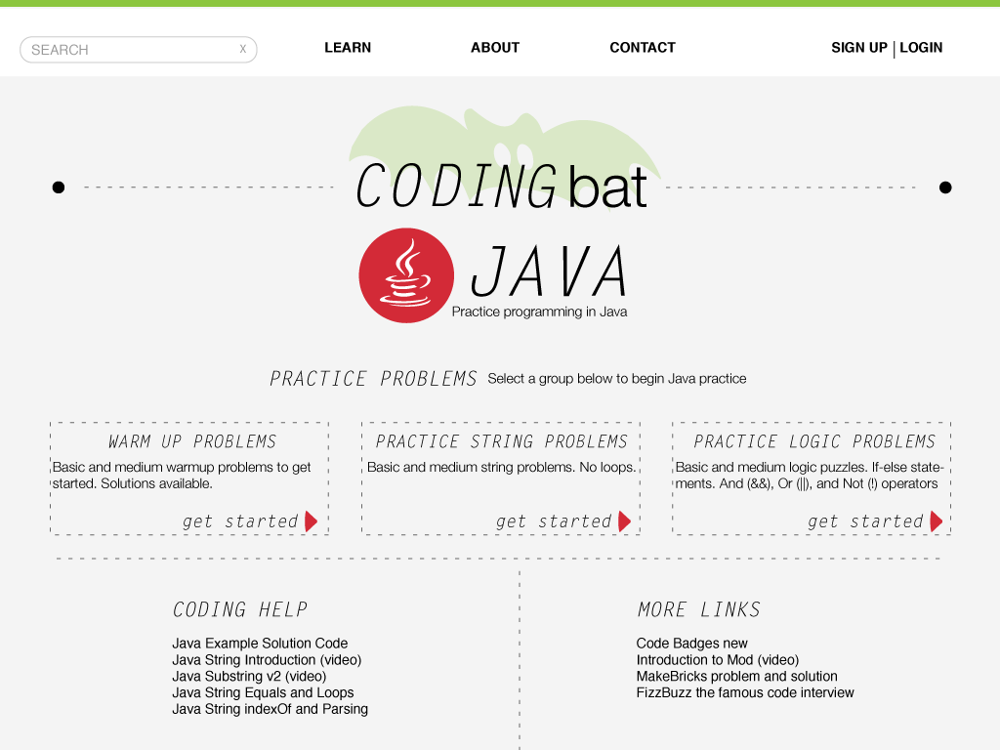
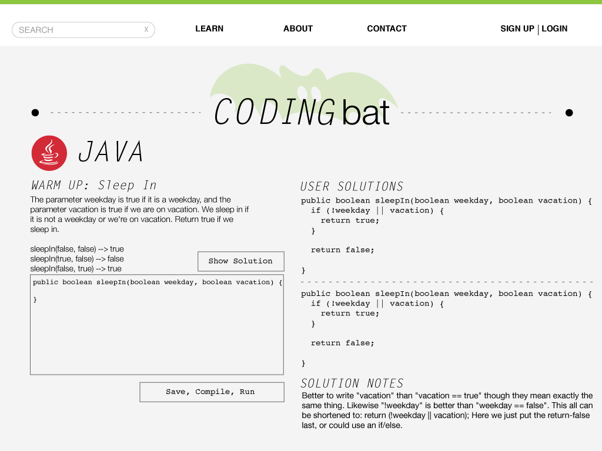

I worked on a review and redesign of an Educational Programming Tool along with my team-mates Monet Spells and John Dugan. We picked CodingBat as our target tool and began by listing out the pros and cons. I felt like the tool had a lot of potential but people weren’t inclined to use it because it was very difficult to navigate. So we decided to redesign the website and created a prototype that would be more user friendly and easier to learn.
This is our proposed redesign for the Java Problems page:

This is our proposed redesign for the Example Problem page:

This was the video we created after completing the review to showcase our findings:
We started by listing out all the features we liked and disliked and suggested improvements for the tool.
Step 1: Characterise the tool. What is it for? What does it do?
Created by a lecturer at Stanford, Nick Parlante
Coding Bat is free site of live coding problems to build skills in Java and Python.
Practice examples for Python and Java
Basic introductory videos to programming concepts (e.g., modulus operator %, explaining problems and solutions)
Step 2: Characterise the audience. What does the audience they know before encountering the tool?
People looking to learn more Python and core Java (no additional libraries)
Understand basic syntax and have seen the language
Refamiliarizing themselves with the language
Step 3: Describe how the tool is designed to match to the audience. Why did the designers think this would work for learning programming for that audience?
The audience is already pretty advanced and doesn’t need to be coaxed into learning.
They are motivated and pursuing opportunities to practice their Java + Python programming skills.
Since they aren’t novice programmers, the design is simple and no-frills.
Step 4: What are the strengths of this tool?
Free
Simple to set up (only two lines for sign up)
Don’t need to sign up in order to do the exercises
Overall use
Simplicity
No download required, can continue to access your account from other computers
Problem Work through
Show test cases on output
Provides hints
Progress graph on solving the problem (though it needs some UI help)
Saves your solution if you leave and return
Step 5: What are the weaknesses of this tool?
Terrible interface. Needs to be more user friendly. (Looks like Craigslist)
The achievements aren’t laid out properly.
No diagnostic Test. Doesn’t give the option to Learn/Practice depending on the skill level of the user.
Can’t tab in the text box
Give alternative solutions (such as other students’ answers)
If you log in after completing problems, you lose those completions.
Step 6: Our improvements / suggestions:
Search functionality would allow users to find specific topics that they want to learn.
Make the choice for practice vs learning
Allow users to see alternate correct solutions from other learners.